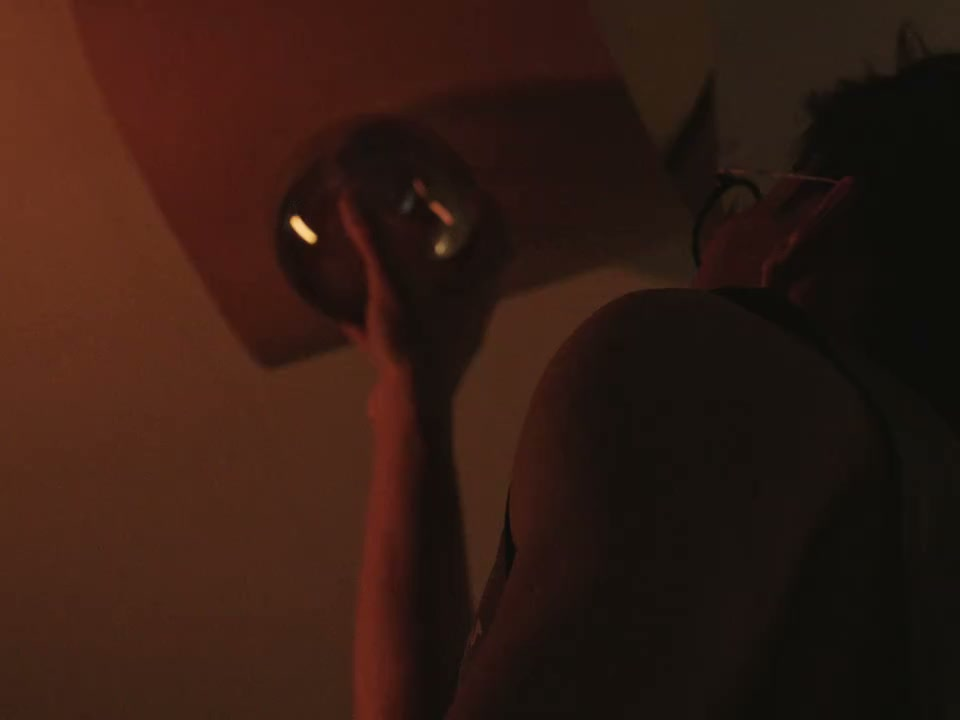
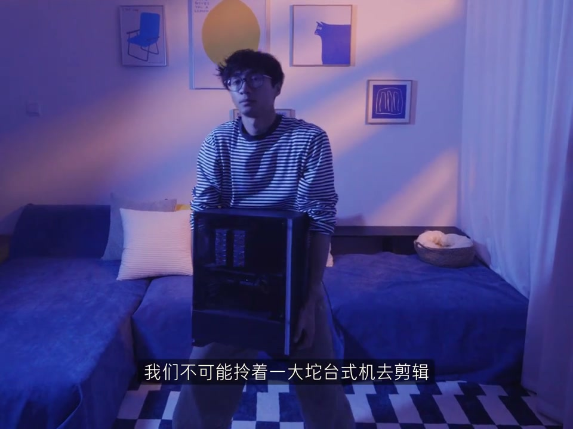
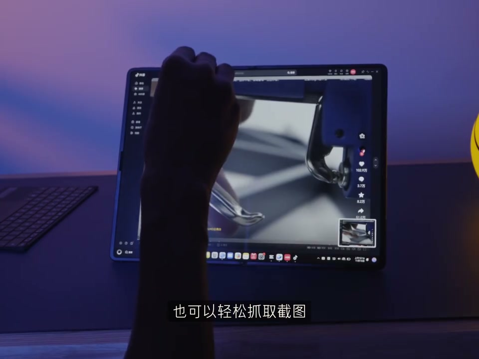

内容要点
这段视频围绕「新手必看|让剪辑效率翻倍的4条秘诀分享」展开，按时间介绍其中的关键环节。你敢相信吗。
剪辑与呈现处理
你敢相信吗。看完这期视频。你的剪辑效率可以从。变成这样。一击一定要写脚本。这是我第一次写的脚本。而这是我现在写的脚本。一个详尽的脚本。能帮你在拍摄中使取百分之八十以上的麻烦。所以下次你可以打开剪音里的

设置与操作流程
此外。像Ctrl加B可以快速切一刀。左键可以把指神快速定位。到上一针和下一针。Alt加G可以快速新件幅的片段。这些常用非常好用的快捷键。我已经整理成清单送给大家。密集三一定要拍完马上剪。每次拍完视频以大堆素材。越拖你就会越不想剪

操作演示
但是剪到一些比较精细的内容时。半屏确实勉强。此时我们就需要用五指对窗口进行放大。就能得到一个瀑布屏。在全场开转台下景。手指操作也可以比较流暂的。完成一些日常剪辑。当然在搭配上键盘和鼠标。那真的用家很爽了。平时用来看报告

总结
但是剪到一些比较精细的内容时。